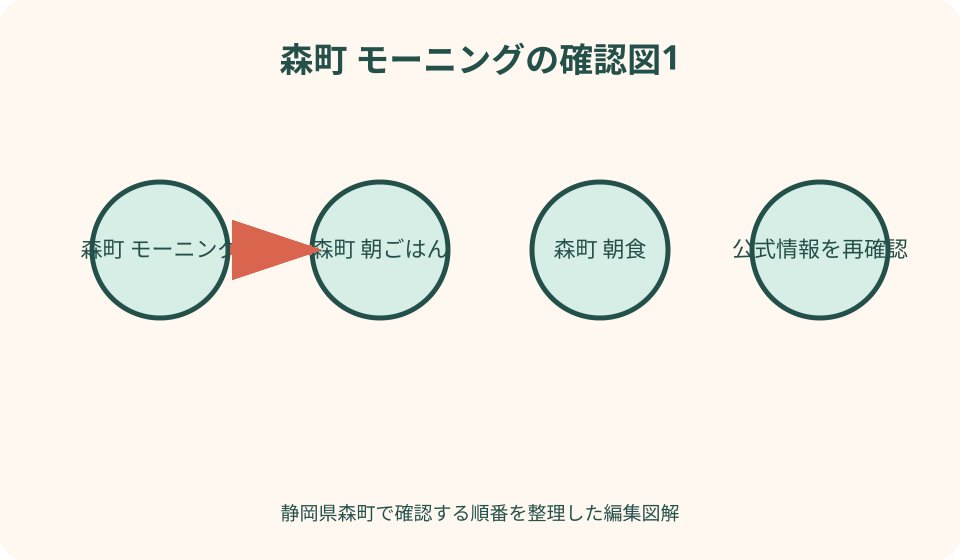
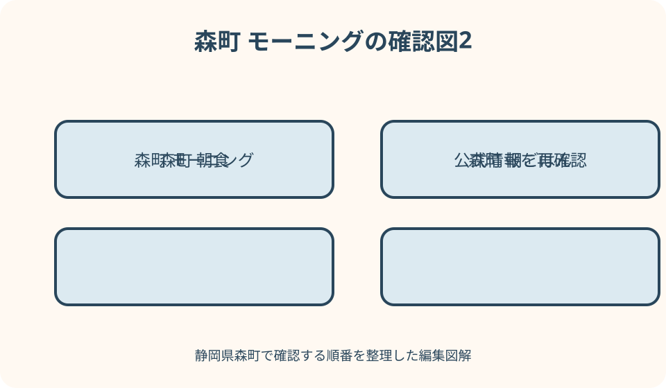

飲食・観光準備｜最終確認 2026-08-10
静岡県森町の朝ごはん・モーニングを観光前に確保する方法
静岡県森町で朝食を確保する最も確実な方法は、観光開始時刻から逆算し、前日に購入・持参する案を基本に、宿泊先の朝食、当日営業を公式確認できたPAや店舗を補助にすることです。森町のカフェやことまち横丁は、観光候補でも朝営業を保証する施設ではありません。遠州森町PAも上下線、フードコート、物販、ぷらっとパークで営業時間が異なるため、NEXCO中日本または運営者の当日情報を確認します。子どもの食べ慣れた物、アレルギー表示、保冷、飲み物、ごみ袋を準備し、昼食予約に影響しない量へ調整してください。

編集イラスト朝食確保は店探しではなく時刻設計から始める
森町観光で朝食を探す時は、店名より先に最初の目的地の到着時刻を決めます。小國神社の参拝、花の撮影、アクティ森の予約など、動かせない時刻から食事時間を引きます。
出発前、自宅周辺、宿泊先、途中のPA、森町到着後という五つの地点へ候補を置きます。森町内で必ずモーニング営業が見つかるという前提を外します。
必要なのは、食べ始め、食べ終わり、移動、トイレ、駐車の時間です。開店時刻と観光予約が同じなら利用できないため、営業時間一覧だけでは計画になりません。
本記事は二〇二六年八月十日の公式情報を基にした選び方です。臨時休業、品切れ、営業時間変更があるため、特定店で食べられることを保証しません。
町なか店舗は朝営業を推測しない——カフェ名とモーニングは別
森町観光協会や店舗公式でカフェを見つけても、店名にカフェ、喫茶、茶店とあるだけで朝営業とは判断しません。公式の営業時間、営業日、朝食メニューを確認します。
例えばcafe flat公式は十時開店、ランチは十一時三十分からと掲載しています。観光前の七時台に利用できる店ではなく、朝食後の休憩や昼食候補として扱います。
ことまちカフェテリアも軽食を紹介していますが、名称や小國神社近接を理由に早朝営業と考えません。ことまち横丁公式の当日営業時間と店舗別案内を読みます。
OSADA TEA CAFE等の茶店も、カフェメニューと物販の営業時間が同一とは限りません。店頭提供、営業カレンダー、休業を当事者公式で確認します。
選択肢を五つに分ける——前日・宿・PA・コンビニ・店舗
第一案は前日購入または自宅からの持参で、開始時刻の影響を最も受けにくい方法です。第二案は宿泊朝食で、提供開始とチェックアウトを宿へ確認します。
第三案は遠州森町PAで、高速道路利用者やぷらっとパーク利用者が候補にできます。第四案はコンビニ等ですが、店舗の現存、二十四時間、品揃えを地図だけで保証しません。
第五案が町なかの飲食店で、当日朝営業を公式に確認できた場合だけ採用します。一つの店へ依存せず、前日購入を予備として残します。
五案は味や人気で順位付けせず、確実性、観光動線、対象時間、座席、アレルギー、保冷、ごみの七項目で比較します。

前日購入を基本にする——常温・冷蔵・飲料を分ける
前日に買う物は、常温で保管できる主食、冷蔵が必要な物、飲み物へ分けます。消費期限と保存方法を表示で確認し、車内へ一晩置きません。
パン、米飯、果物、乳製品等を例にしても、本人の体調、アレルギー、保存条件で適否が違います。旅行用だから普段食べない商品を子どもへ初めて出しません。
宿の冷蔵庫は容量、冷却力、冷凍、退室時の忘れ物に注意します。共用冷蔵庫なら名前、保管規則、衛生を宿へ確認します。
翌朝は食べる人数分を小分けし、車内用と現地用を分けます。全食料を一つの保冷バッグへ入れ、観光のたびに長時間開閉しません。
宿泊朝食を確認する——宿泊プラン名だけで決めない
宿泊予約では、朝食付き、素泊まり、軽朝食、弁当対応を区別します。朝食付きという表示だけで、出発したい時刻より前に提供されるとは限りません。
提供開始、最終入場、会場、部屋食、持出し可否、子ども料金、アレルギー相談期限を予約前に宿へ質問します。早出を理由に無断で料理を持ち出しません。
コテージ等では台所設備があっても、調理器具、食器、熱源、冷蔵庫、洗剤、食材販売が揃うとは限りません。施設公式の備品表を確認します。
朝食提供が観光開始に合わない場合は素泊まりと前日購入へ替えます。料金差だけでなく、準備、片付け、ごみ持帰りを含めて選びます。
遠州森町PA上り——方向と利用経路を先に確認
NEXCO中日本は遠州森町PA上りを東京方面と案内し、ぷらっとパークの開閉やフードコート等を掲載しています。上りと下りを同じ建物として扱いません。
上りのぷらっとパークは公式ページで七時から二十一時と掲載されていますが、これは外部からの入口時間です。飲食店の全商品が七時に揃う保証ではありません。
高速道路本線から利用するか、一般道からぷらっとパークへ入るかで駐車と再出発が変わります。スマートICの進行方向も含めてNEXCOの経路を確認します。
フードコート、物販、自動販売機は営業時間が異なります。自動販売機の二十四時間表示を温かい朝食提供の営業時間へ広げません。

遠州森町PA下り——上りの営業時間を流用しない
下り線は運営者公式が営業時間を掲載していますが、店舗ごとに異なるという注意があります。上りで見た店名、メニュー、七時開店を下りへコピーしません。
工事、台風、設備点検でPAまたは一部店舗が閉鎖・短縮されることがあります。旅行日当日にNEXCOの店舗・工事情報を確認します。
朝七時台に施設が開いていても、希望する定食、子ども向け品、持帰り商品が販売中とは限りません。食べられる物が限定されてもよい予備食を車へ残します。
PAへ朝食だけのため遠回りする場合は、高速料金、スマートIC、上下線、再流入を確認します。距離の近さだけで往復可能と判断しません。
コンビニを使う——存在・24時間・在庫を保証しない
地図上のコンビニは、閉店、営業時間短縮、改装、位置変更が反映されていない場合があります。チェーン公式の店舗検索と当日の営業表示を確認します。
二十四時間営業の表示があっても、災害、設備、スタッフ事情で変わります。観光地近くなら朝食が必ず豊富という推測もせず、売切れ時の予備を持ちます。
温かい商品、コーヒー、店内飲食、電子レンジ、湯、トイレ、ごみ箱は店舗ごとのサービスです。購入前に利用可否を確認し、他店の包装ごみを持込みません。
駐車場で長時間食事をすることを当然とせず、混雑時は短時間で退出します。子どもを車内へ残して買物せず、乗降時の車両に注意します。
子連れの朝食——食べ慣れた物と時間の余白を持つ
子ども連れでは、大人の開店待ちへ合わせず、起床後に食べられる物を一つ用意します。空腹のまま長距離移動や参拝列へ入る計画にしません。
年齢に合う大きさ、食具、飲み物、エプロン、手拭き、着替えを用意します。車が動いている間に食べさせず、安全に停車して姿勢を確認します。
PAや飲食店では、ベビーチェア、子ども椅子、離乳食持込、温め、授乳、おむつ替えを施設公式または現地で確認します。設備写真だけで使用可能と決めません。
食べるのが遅い場合は観光開始を遅らせる余白を作ります。完食を急がせ、走りながら食べることを時間短縮策にしません。
アレルギーを確認する——メニュー名と原材料は別
食物アレルギーがある人は、メニュー名や見た目から原材料を推測しません。店舗へ対象食材、調味料、製造設備、調理器具の共有を確認します。
除去対応できるという回答も、微量混入を完全に防ぐ保証とは限りません。本人の医療上の指示と店舗説明を踏まえ、持参食へ切り替える基準を決めます。
PAの複数店舗やコンビニ商品では、商品ごとの表示を購入時に読みます。以前安全だった同名商品も、配合や製造場所が変わる可能性があります。
緊急薬を処方されている場合は、保管温度、使用期限、同行者への共有を医療機関の指示に従います。店側の対応へ全てを委ねません。
保冷と車内温度——朝だから低温とは考えない
夏だけでなく晴れた車内は朝から温度が上がります。要冷蔵品は十分な保冷剤と保冷バッグへ入れ、直射日光の当たる座席や荷室へ放置しません。
保冷バッグは冷蔵庫ではなく、時間と開閉で温度が上がります。商品の保存表示、購入時刻、食べる時刻を見て、長時間持歩く品を減らします。
食べ残しを昼まで保存する場合、口を付けた物や開封品を安全に再保存できるとは限りません。無理に持ち回らず、適切に処分します。
温かい食品も購入直後の温度を長時間保てるとは限りません。加熱し直せる設備を想定せず、早く食べる分だけ購入します。
ごみと食事場所——観光地へ包装を持込まない
朝食の包装、カップ、食べ残し、ウェットティッシュを入れる密閉袋を持参します。寺社、公園、駐車場にごみ箱があると期待しません。
購入店のごみ箱は、その店で購入した物だけ等のルールがあります。家庭や別店のごみをPA、コンビニ、観光施設へ持込まず、宿または自宅へ持ち帰ります。
小國神社等の境内では、飲食可能な区域を確認します。参道、社殿、植栽、川沿いで朝食を広げず、ことまち横丁の席も営業時間外に無断使用しません。
食後は手指、テーブル、車内を整え、食べ物を野生動物へ与えません。こぼした物を水で側溝へ流すのではなく、施設の指示に従います。
昼食との配分——朝に食べすぎず予約へつなぐ
森町でランチを予約している場合、朝食量を昼食時刻から逆算します。早朝に軽く、観光中に補食、昼に食事という分け方もできます。
朝食を確保できなかった反動で、PAやコンビニで一度に買いすぎないよう人数分を決めます。昼食の予約時刻、移動、子どもの食事間隔を表にします。
カフェやことまち横丁を昼前に利用するなら、朝食と昼食の中間として扱うか、昼食を別にするかを決めます。同じ時間帯に複数の食事予定を重ねません。
満席や売切れで昼食が遅れる可能性もあるため、未開封で持運べる補食を一つ残します。ただし高温の車内へ放置しません。
前日と当日朝の確認順——三分で済む表を作る
前日は、第一候補の公式営業時間、定休日、臨時告知、利用経路を確認します。宿泊朝食なら提供開始、PAなら上下線と店舗、町なかなら朝食提供の有無を見ます。
次に第二候補のコンビニ・PAと、前日購入品の保管を確認します。第一候補が営業していても、混雑や売切れを考え予備を取り消しません。
当日朝は、店舗SNSまたは公式告知、NEXCOの工事・営業、天候と道路を確認します。検索結果の営業時間だけで出発しません。
電話確認は開店準備を妨げない時間に行い、営業、朝食提供、人数、到着見込みを短く尋ねます。予約不可を席の確保と誤解しません。
良い点——PAと前日購入で早朝観光へ接続できる
森町の良い点は、新東名の遠州森町PAがあり、高速移動の途中で朝食候補を確認できることです。上下線と店舗時間を分ければ実用的な選択になります。
町内には茶店やカフェ、ことまち横丁がありますが、朝食に限定せず昼食・休憩へ回せます。朝営業でない店を候補から外しても観光価値は失われません。
前日購入、宿泊朝食、PA、コンビニという複数経路を持てば、一店の臨時休業で観光開始が崩れにくくなります。
子連れやアレルギーのある家庭も、持参食を基本に店舗情報を足す形なら、現地で食べられる物を探し続ける負担を減らせます。
注文したい点——カフェを朝食営業へ読み替えない
注文したい点は、検索結果にカフェが出たことをモーニング営業の証拠にしないことです。cafe flatのように十時開店なら、早朝観光前には間に合いません。
PAも施設開閉、自動販売機、フードコート、物販の時刻が別です。二十四時間の設備表示を全飲食店の営業保証へ変えません。
口コミの『朝食に良い』『おいしい』は、現在の営業日、アレルギー、在庫を確認する一次情報ではありません。本記事ではランキングや味の体験談を使いません。
営業時間を確認しても、臨時休業、品切れ、混雑は残ります。確認を保証へ変えず、予備食と第二候補を持ちます。
対案・結論——前日購入を土台に二段階で確保
結論として、食べ慣れた前日購入品を一食分用意し、宿泊朝食または公式確認できたPA・店舗を第一候補にします。現地購入だけへ依存しません。
観光開始から九十分前を食事開始の目安として家庭の移動時間を足し、トイレ、片付け、駐車を含めます。固定の九十分ではなく同行者に合わせて調整します。
アレルギー、保冷、子どもの食具、ごみ袋、昼食予約を一枚で確認します。食べる場所のルールが不明なら車内または宿で安全に済ませます。
第一候補が使えなければ第二候補を探し回らず、持参食へ切り替えます。朝食確保を早く終え、森町での参拝や体験の時間を守ります。
大石の視点——名店より朝の不確実性を減らす
大石の視点では、観光前の朝食に必要なのは名店を当てることではなく、開店変更や売切れがあっても食べられる設計です。前日購入が地味でも強い理由です。
森町のカフェや茶店は営業時間に合う時に丁寧に利用し、無理にモーニング枠へ押し込みません。朝はPAや持参、昼は町の店という配分も自然です。
子どもやアレルギーがある人ほど、現地の選択肢の多さより、食べ慣れた一品の確実性が役立ちます。店舗へ過剰な対応保証を求めません。
朝食、ごみ、保冷、昼食までを一続きで考えると、観光地で慌てて食べる必要がなくなります。食事を目的地ではなく一日の基盤として扱います。
早朝に小國神社へ向かう日、花の撮影時刻を優先する日、アクティ森の予約開始に合わせる日では、朝食へ使える時間が違います。目的地の到着希望時刻から、移動、食事、身支度を逆算し、店内飲食が収まらない日は最初から持参へ切り替えます。営業時間の長さではなく、自分の行程に入るかで判断するのが森町観光の朝には実用的です。
候補を一つに絞る必要もありません。主案を前日購入、副案を進行方向のPA、非常用を飲料と個包装品の持参と決めれば、臨時休業や渋滞が起きても観光開始を大きく遅らせずに済みます。ただしPAへ入るための道路方向、宿泊施設の朝食提供条件、各商品のアレルゲンは別々に確認し、代案があることを安全や営業の保証と取り違えないようにします。
公式情報・確認先
掲載内容は次の一次情報を基礎に整理しました。営業、料金、催し、交通は変わるため、出発前または手続き前にリンク先で最新情報を確認してください。
- 森町公式 観光（静岡県森町、2026-08-10確認）
- 森町公式 令和8年度町長案内・新施設営業（静岡県森町、2026-08-10確認）
- NEXCO中日本 遠州森町PA上り（NEXCO中日本、2026-08-10確認）
- NEXCO中日本 遠州森町PA下り（NEXCO中日本、2026-08-10確認）
- 遠州森町PA下り運営者公式（kagonoya.food-kr.com、2026-08-10確認）
- cafe flat公式（www.flat-morimachi.com、2026-08-10確認）
- ことまちカフェテリア公式（ことまち横丁、2026-08-10確認）
- OSADA TEA CAFE公式（www.osadaenhonten.com、2026-08-10確認）